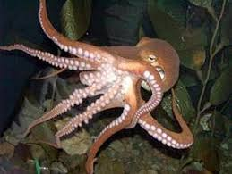
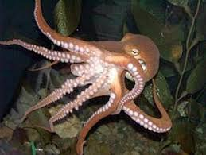
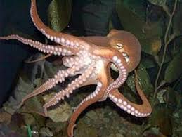

A gastronomía na Guarda é moi importante, coma en toda Galicia. Se chegas a Guarda poderás catar animales mariños de todo tipo:Mariscos, moluscos, peixes, etc

O MONTE TEGRA
O monte Santa Tegra é o mejor que hai na Guarda. Ten unhas vistas increíbles.
Tamén no monte Santa Tegra podes visitar os castros, aqui vai unha imaxe:
 
